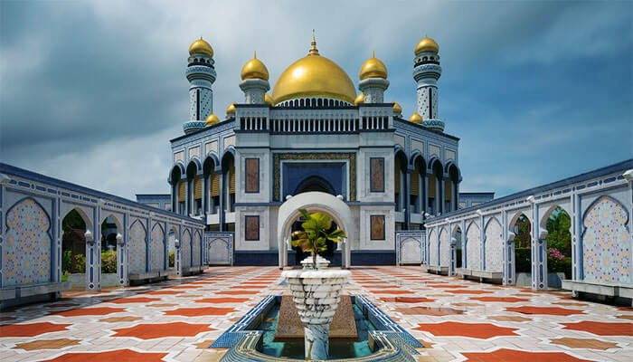

ประเทศบรูไนดารุสซาลาม (Brunei)

เมืองหลวงคือบันดาร์เสรีเบกาวัน ปกครองด้วยระบบสมบูรณาญาสิทธิราชย์โดยมีสุลต่านเป็นประมุข รายได้เกือบทั้งหมดมาจากการส่งออกน้ำมันและก๊าซธรรมชาติ ประชากรมีรายได้ต่อหัวสูงและมีระบบสวัสดิการรัฐที่ดีมากเป็นประเทศบนเกาะบอร์เนียวในภูมิภาคเอเชียตะวันออกเฉียงใต้ ชายฝั่งทางด้านเหนือจรดทะเลจีนใต้ พรมแดนทางบกที่เหลือจากนั้นถูกล้อมรอบด้วยรัฐซาราวักของมาเลเซียตะวันออก บรูไนเป็นประเทศเดียวที่มีพื้นที่ทั้งหมดอยู่บนเกาะบอร์เนียว ส่วนพื้นที่ที่เหลือของเกาะถูกแบ่งเป็นของประเทศมาเลเซียและอินโดนีเซีย ข้อมูลเมื่อ 2023 ประเทศนี้มีประชากร 455,858 คนในจำนวนนี้อาศัยอยู่ในบันดาร์เซอรีเบอกาวัน เมืองหลวงและเมืองใหญ่สุด ประมาณ 180,000 คน มีภาษามลายูเป็นภาษาราชการและศาสนาอิสลามเป็นศาสนาประจำชาติ แม้ว่าศาสนาอื่น ๆ ได้รับการยอมรับอย่างเป็นทางการ รัฐบาลบรูไนปกครองโดยสุลต่านภายใต้ระบอบสมบูรณาญาสิทธิราชย์ และกฎหมายที่ผสมผสานระหว่างคอมมอนลอว์ของอังกฤษและนิติศาสตร์ที่ได้รับแรงบันดาลใจจากศาสนาอิสลาม รวมถึงชะรีอะฮ์ด้วยจักรวรรดิบรูไนเจริญถึงขีดสุดในสมัยสุลต่านโบลเกียห์ (ค.ศ. 1485–1528) โดยอ้างว่าสามารถควบคุมพื้นที่ส่วนใหญ่ของเกาะบอร์เนียวได้ อาทิรัฐซาราวักและซาบะฮ์ในปัจจุบัน และกลุ่มเกาะซูลูกับหมู่เกาะที่ปลายตะวันตกเฉียงเหนือของบอร์เนียว และยังมีการอ้างสิทธิ์ในอดีตควบคุมเหนือเซอลูดงที่นักวิชาการเอเชียตะวันออกเฉียงใต้เชื่อว่าชื่อของสถานที่ดังกล่าวนั้นแท้จริงแล้วเป็นการอ้างอิงถึงเขาเซอลูรงในประเทศอินโดนีเซียหรือแม่น้ำเซอรูดงในซาบะฮ์ตะวันออก ลูกเรือที่รอดชีวิตในเรือจากการสำรวจของมาเจลลันเดินทางเยือนรัฐบรูไนใน ค.ศ. 1521 และใน ค.ศ. 1578 จึงสู้รบต่อสเปนในสงครามกัสติยา